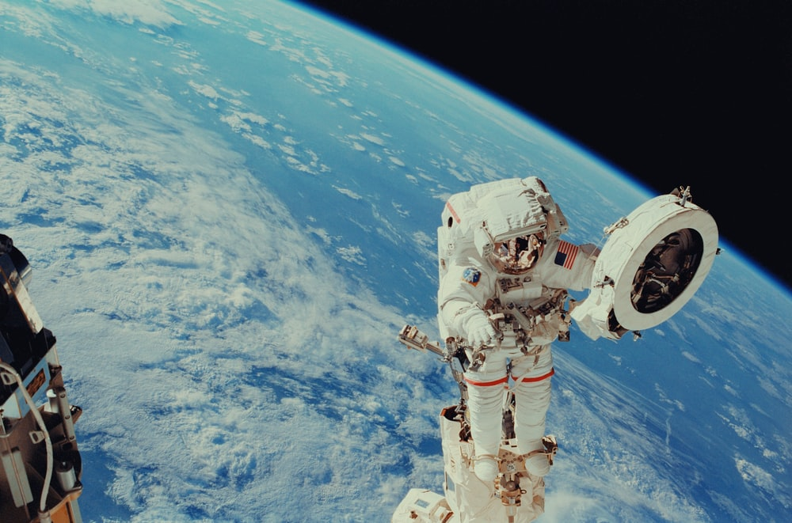

NASA is to establish a study into UFOs [File: John Raoux/ AP Photo]
NASA is to establish a study into UFOs [File: John Raoux/ AP Photo]
NASA has announced it will begin a study of UFOs – a subject that has long fascinated the public – as part of a new push towards high-risk, high-impact science. The United States space agency said on Thursday that an independent team would examine unidentified flying objects or unidentified aerial phenomena (UAP) with a focus on identifying available data, how to gather more data, and how NASA can analyse the findings to advance scientific understanding of the sightings.
Scientists release first analysis of rocks
NASA’s science mission chief, Thomas Zurbuchen, acknowledged the traditional scientific community may see NASA as “kind of selling out” by venturing into the controversial topic, but he strongly disagrees. “We are not shying away from reputational risk,” Zurbuchen said during a National Academy of Sciences webcast. “Our strong belief is that the biggest challenge of these phenomena is that it’s a data-poor field.” While NASA probes and rovers scour the solar system for the fossils of ancient microbes, and its astronomers look for so-called “technosignatures” on distant planets for signs of intelligent civilisations, this is the first time the agency will investigate unexplained phenomena in Earth’s skies. “Over the decades, NASA has answered the call to tackle some of the most perplexing mysteries we know of, and this is no different,” Daniel Evans, the NASA scientist responsible for coordinating the study, told reporters on a call.
 The announcement comes as the field of UFO study, once a poorly-regarded research backwater, is gaining more mainstream traction.TLast month, Congress held a public hearing into UFOs, while a US intelligence report last year cataloged 144 sightings that it said could not be explained. It did not rule out alien origin. NASA’s study will be independent of the Pentagon’s Airborne Object Identification and Management Synchronization Group, but the space agency “has coordinated widely across the government regarding how to apply the tools of science”, it said in a statement. The study will last nine months, at a cost of no more than $100,000. It will be entirely open, with no classified military data used.